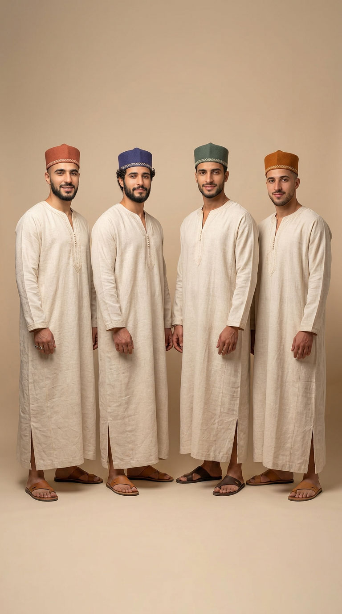
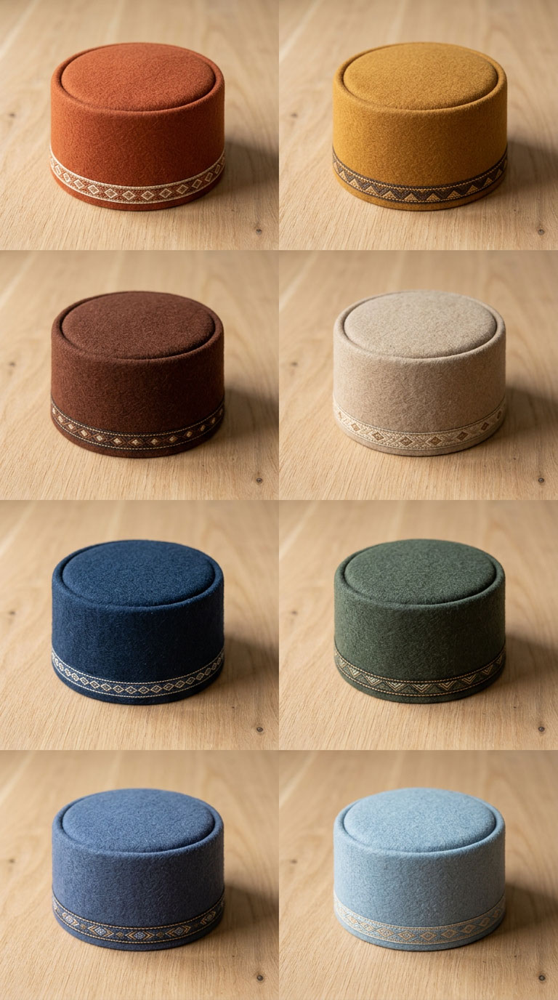
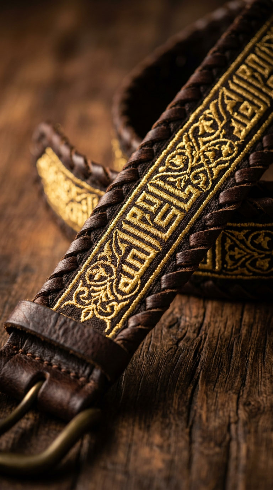
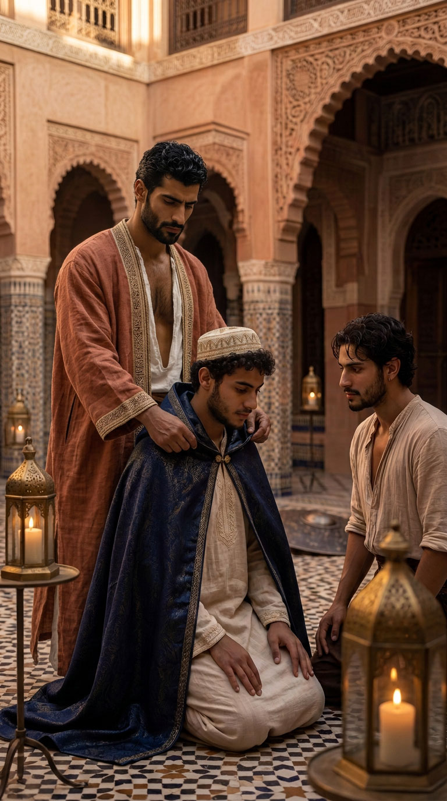
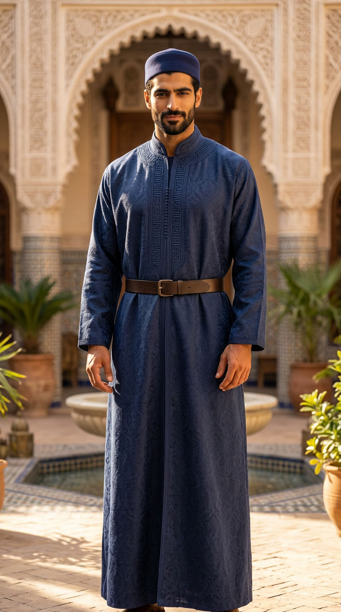
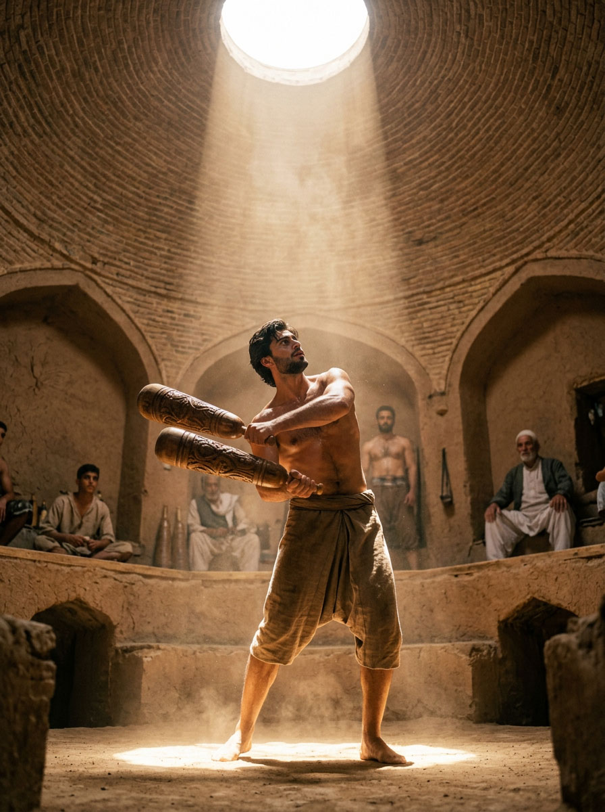
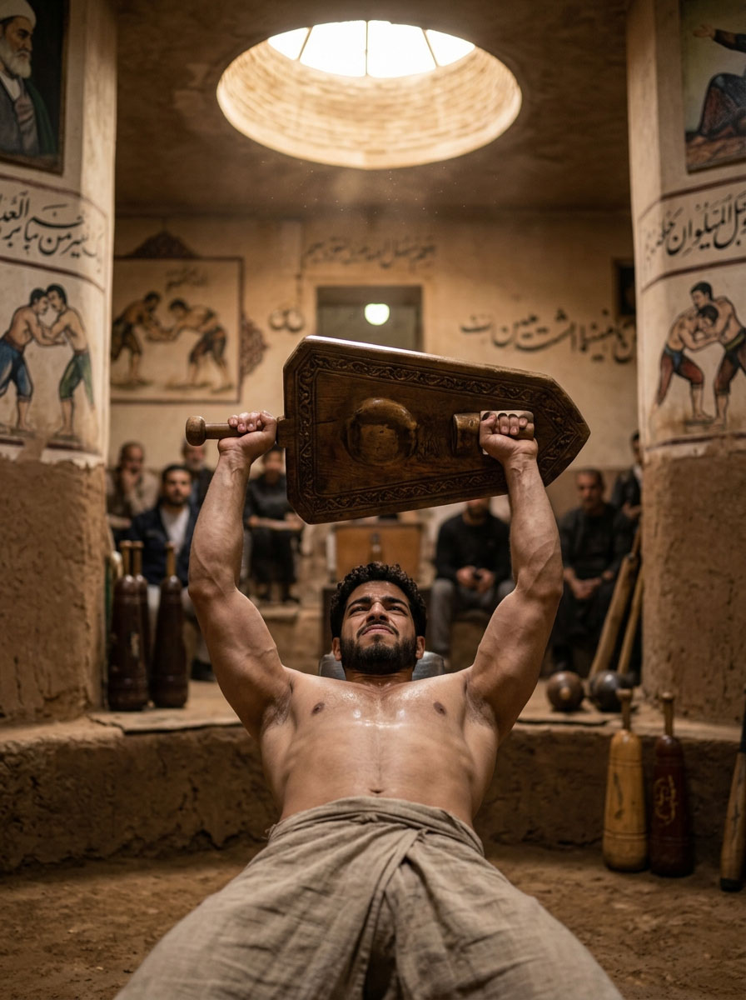
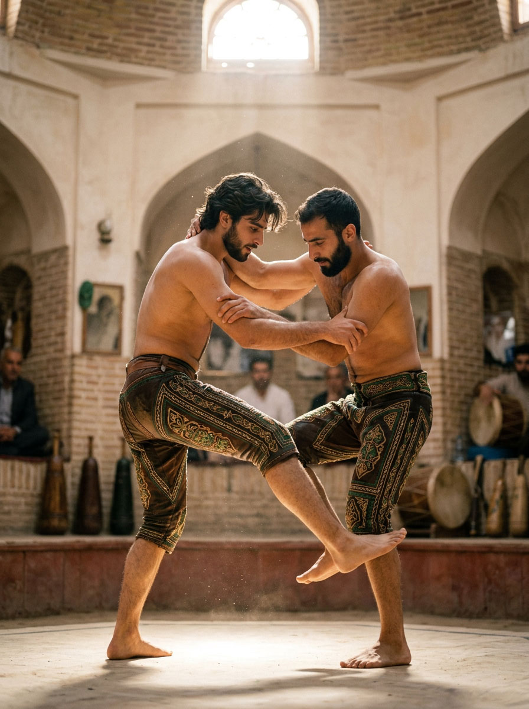
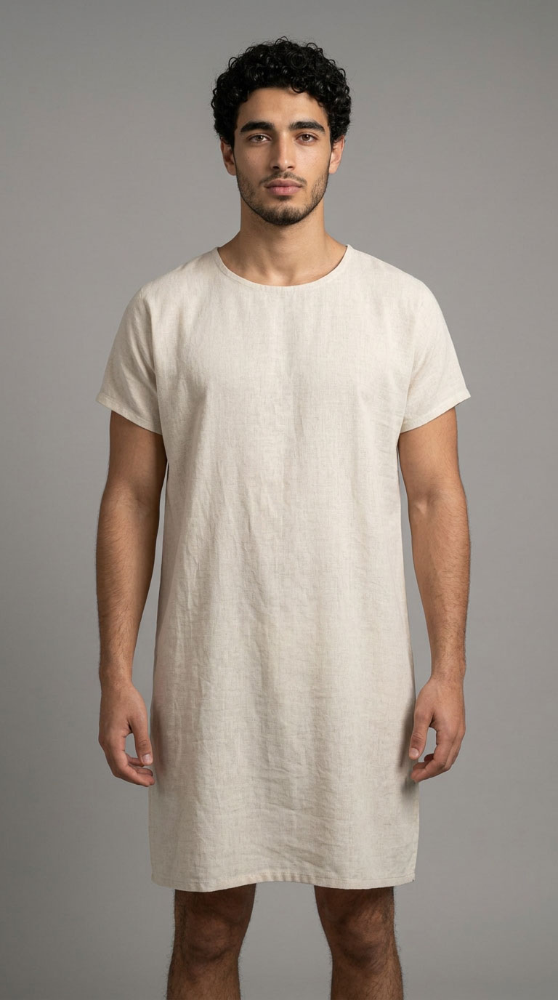

Le vêtement de l'homme
لباس الرجل
Formes, matières et noms de l'habit masculin marocain — les lignes du Mashreq, du Golfe, de l'Empire ottoman et de la Perse — et le système vestimentaire propre à Dar al-Hiraf.

DANS LA MAISON
Une manière de porter, pas un uniforme

Dans la vie quotidienne du Riad — repas, prière, causeries, travail aux ateliers — le vêtement traditionnel est la norme, non l'exception. Ce n'est pas affaire d'apparence : le corps n'apprend pas la même tenue, la même mesure dans le geste, en portant une djellaba plutôt qu'un t-shirt. C'est la même logique que celle des ateliers de Dar al-Hiraf — la main apprend en répétant le geste, pas en le lisant.
Aux ateliers, on privilégie une tenue traditionnelle pratique — manches courtes, tissu résistant — plutôt que la plus habillée : un vêtement de travail, pas un vêtement de représentation.
En dehors du Riad, chacun s'habille comme il l'entend. Cette liberté n'est pas contredite par ce qui précède : elle en est le complément naturel. Ce que le Riad demande, il ne le demande qu'à l'intérieur de ses murs — et progressivement, à mesure que le sens s'en révèle, plutôt que d'un coup, le premier jour.
MAGHREB
Le vestiaire marocain
المغرب

جلابة
Djellaba
ǧallāba · jellaba
Longue robe ample à capuche pointue (قب, qob). Pièce quotidienne et de sortie : coton ou lin l'été, laine l'hiver. La capuche protège du soleil et du froid. Colonne vertébrale du vestiaire masculin maghrébin.

جبادور
Jabador
ǧabādūr · jabador
Ensemble de cérémonie : tunique droite fermée par une rangée de boutons sphériques tressés à la main (عقد, ʿaqad / aakad), assortie au serwal (سروال, sirwāl). Ceinture mdama (مضمة, maḍamma). Mariages, fêtes, grandes occasions.

قميص
Qamis
qamīṣ · kamis
Tunique droite, légère, sans capuche, jusqu'aux chevilles. Coton ou satin blanc. Souvent porté avec la taqiyah. Variante d'intérieur : la gandoura (غندورة, ġandūra).

سلهام
Selham
silhām · selham
Large manteau de laine, ouvert, sans manches, à capuche. On le porte par-dessus la djellaba par temps froid ou à cheval. Signe de dignité et de protection.

طربوش · طاقية · عمامة · شاشية
Les coiffes marocaines
ṭarbūš · ṭāqiyya / taguia · ʿimāma / rezza · chechia
Tarbouche (Fez) — coiffe cylindrique de feutre rouge, souvent à pompon de soie noire. Héritage urbain ottoman et maghrébin.
Taqiyah (Taguia) — petit calot rond, bien ajusté au crâne. La pièce la plus simple et la plus courante, portée pour la prière comme dans la vie quotidienne. Au Maroc, taguia.
Turbante (ʿimāma / rezza) — pièce de tissu enroulée autour de la tête ou de la taqiyah. Variante plus solennelle, encore présente dans les milieux traditionnels.
Chechia — forme voisine de la taqiyah, plus souple, parfois en laine ou feutre. Usage quotidien et de prière.
AUX ATELIERS
Tenue de travail

Tunique à manches courtes, tissu résistant, ceinture de cuir, belgha — le vêtement qui accompagne le geste du métier. Pas de représentation : la main libre, le corps à l'aise.
Coton ou lin léger, coupe droite. La même logique que le qamis, adaptée au travail de l'atelier.

تحت اللباس · الليل
Sous le vêtement · La nuit
Maison et nuit — Pas de pyjama codifié. Gandoura ou qamis de coton fin.
Couches sous la tunique — Izar ou caleçon → serwal → qamis / gandoura → djellaba ou jabador.

ACCESSOIRES
Belgha · Serwal · Mdama
Belgha — babouche de cuir. Serwal — pantalon large. Mdama — ceinture.
COMPARAISON
Au-delà du Maghreb
ما وراء المغرب
Golfe · Mashreq · Monde ottoman · Perse

Thobe · Dishdasha · Kandura
ثوب · دشداشة · كندورة
Tunique longue quotidienne. Ghutra fixée par l'ʿiqāl.

Thobe · Keffiyeh
ثوب · كوفية
Tunique longue avec keffiyeh (kūfiyya) drapée sur les épaules — variante du Mashreq et du Levant.

Bisht
بشت
Manteau cérémonial, souvent bordé d'or.

Salvar · Cepken · Fes
Salvar, cepken, kuşak, fes. Pas de djellaba à qob.

Qaba · Pirahan · Shalvar
قبا · پیرهن · شلوار
Le qabā est le manteau long, souvent ouvert devant.
DAR AL-HIRAF
Al-Kiswa al-Khassa
الكسوة الخاصة بدار الحِرَف
Le système propre à Dar al-Hiraf
Au-delà du vestiaire marocain et arabe décrit plus haut, les élèves de Dar al-Hiraf portent un système de signes propre à la maison — non un uniforme, mais un langage visuel construit sur trois besoins distincts : l'appartenance commune, l'identification du métier, et la narration discrète du chemin personnel accompli.
Deux tenues publiques sont prévues : la tenue officielle (pièce de base + turban + ceinture, pour la vie au Riad et les occasions de représentation) et la tenue réduite/urbaine (pièce de base seule, avec son détail distinctif, pour sortir en ville) — sans compter la pleine liberté de porter des habits ordinaires hors du Riad.
Ce système répond aussi à une logique de matière, à trois niveaux : fibres naturelles brutes (lin, chanvre, coton) pour tout l'usage quotidien, sans exception ; damas tissé ton sur ton pour les grandes occasions des maîtres ; brocart à fil d'or sqalli réservé aux deux seuls points du système pensés comme un moment sacré à part — le manteau d'investiture et le bord de la ceinture de grade 4. La richesse de matière s'élève ainsi seulement là où elle porte un vrai sens, jamais comme standard diffus.

الغندورة
Al-Ghandura — la pièce de base
La gandora du Riad reprend la forme du qamis simple, sans capuche, longueur mi-mollet — mais taillée pour épouser un corps entraîné : épaules structurées, port droit, sans jamais tomber dans l'ajusté de coupe occidentale. Le principe : un vêtement qui habille un corps sain, sans jamais le cacher sous l'excès de tissu.
L'ouverture frontale est bordée d'un fil de sfifa (سفيفة, sfīfa — le cordonnet brodé traditionnel marocain) dans une couleur unique, identifiable au premier coup d'œil comme la marque du Riad. Manches droites, arrotolables au coude pour le travail artisanal. Palette : écru, crème, terre claire — jamais blanc pur, jamais couleur sombre saturée.
Fibre naturelle exclusivement — lin, chanvre, coton épais non lustré l'été ; laine légère l'hiver.

قبعة الحرفة
Qubbaat al-Hirfa — la calotte de métier
Note : forme propre à Dar al-Hiraf, sans nom traditionnel établi — descriptif, non un terme historique attesté.
Une calotte cylindrique rigide en feutre, parois latérales verticales nettes, surface supérieure plate ou légèrement bombée, sans pompon, avec un fin bordage brodé à motif géométrique le long de la base — à mi-chemin entre la taqiyah et le tarbouche, mais plus sobre. Sa couleur indique le métier du porteur.


FAMILLE « MATIÈRE DURE » (tons terre)
- Najjāra (نجارة, menuiserie) : terre cuite
- Ḥajjāra (حجارة, taille de pierre) : ocre brûlé
- Ḥaddāda (حدادة, forge) : brun rouille
- Gebs (جبس, plâtre sculpté) : sable clair
FAMILLE « MATIÈRE SOUPLE » (tons minéraux)
- Nassāja (نساجة, tissage) : indigo
- Dabbāgha (دباغة, tannerie) : vert sauge foncé
- Zellīj / Fakhkhāra : bleu cobalt atténué
- Ṭarrāza (طرازة, broderie) : bleu poudre
- Khaṭṭ (خط, calligraphie) : indigo clair

حزام الإتقان
Hizam al-Itqan — la ceinture de grade
Une progression continue de bruns, du cru au très foncé, marque le chemin personnel sans jamais l'exposer comme une hiérarchie visible :
- cru, non teint : entrée, novice
- brun clair : formation avancée
- brun foncé, presque noir : proximité de la maîtrise
- brun foncé, brodé au fil d'or : maître
La ceinture de grade 4 porte, en broderie coufique andalouse, un ḥadīth authentifié : « Allah aime que, lorsque l'un de vous accomplit une œuvre, il l'accomplisse avec excellence. »

الخرقة
Al-Khirqa — le manteau d'investiture
Pour les grandes occasions — entrée dans le parcours, avancement de grade, investiture de maître — un manteau distinct est remis, non simplement porté : une cérémonie d'investiture, sur le modèle direct de la tradition derviche de la khirqa. Le maître revêt personnellement l'élève, scellant ainsi l'entrée ou l'avancement dans la communauté.
Couleur unique — brun très sombre ou bleu nuit profond — en brocart à fil d'or sqalli, le seul emploi de ce tissu dans tout le système avec le bord de la ceinture de grade 4. Le manteau lui-même, contrairement à la ceinture, n'est remis qu'une seule fois dans une vie — exactement comme la khirqa derviche.
Ce manteau et cette cérémonie prennent tout leur sens à la lumière de l'idéal qui les sous-tend — voir Futuwwa.

الحُلّة
Sopraveste des maîtres
Le maître ne porte plus la couleur de son métier en un seul détail, mais dans le vêtement tout entier : une sopraveste longue jusqu'à la cheville, dans la tonalité de son métier, en damas tissé ton sur ton — sans fil métallique, réservé au manteau d'investiture seul. C'est le passage d'une identité visuelle collective à une identité pleinement personnelle.

الهدية
Le vêtement-cadeau pour hôtes de marque
Pour les visites de dignitaires ou de mécènes, aucun habit n'est proposé à l'hôte pour être porté sur le moment — l'habit d'un dignitaire de cour relève de son propre protocole. Une sopraveste ou un manteau léger est en revanche offert en cadeau de fin de visite, sur le modèle de la pratique historique des corporations artisanales et des cours maghrébines.
الفروسية والرماية والمصارعة
La discipline physique
Cohérent avec l'idéal historique de la futuwwa, le système prévoit des variantes fonctionnelles pour la Musara (sarouel court en lin léger pour la lutte debout ; pantalon ajusté en cuir travaillé, inspiré du kispet de la lutte ottomane, pour la lutte au sol), le tir à l'arc (épaule et avant-bras droit dégagés) et l'équitation (gandora à fente latérale profonde, turban resserré).
Ces trois disciplines et leur place dans l'idéal de la futuwwa sont développées dans Furusiyya.

La Musara debout, en sarouel de lin léger.

La Musara au sol

Kispet

Rimaya — épaule et avant-bras droit dégagés pour la corde.

Équitation — Tenue de représentation

Équitation — Tenue du désert

Mil — les massues de bois

Le sang, en position allongée

Zurkhane
تحت الثياب
Sous le vêtement — les pièces privées

La tenue de nuit
Tunique courte en lin léger, sans décoration, sans couleur identificative : pièce privée, hors du système de signes publics.

Le tablier de hammam
Un panneau unique de lin léger, noué à la taille, sur le modèle du kötény des bains ottomans ; le parallèle marocain le plus proche reste la fouta traditionnelle du hammam.

L'habit de prière
Qamis blanc ou cru clair, sans broderie ni ceinture : dans la prière, l'égalité entre les élèves prévaut sur tout signe de grade ou de métier.